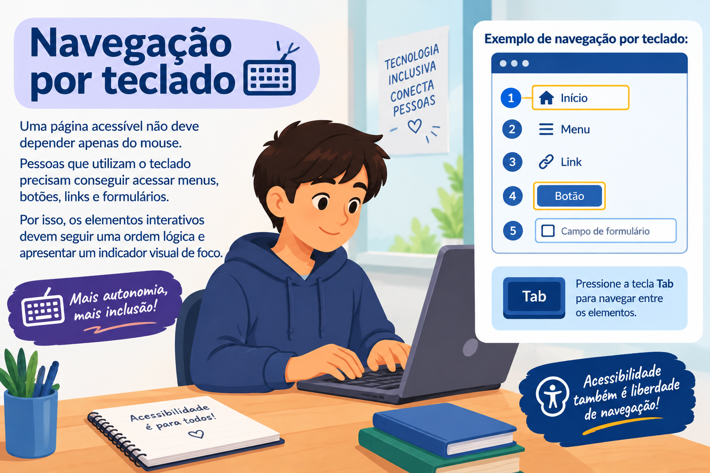
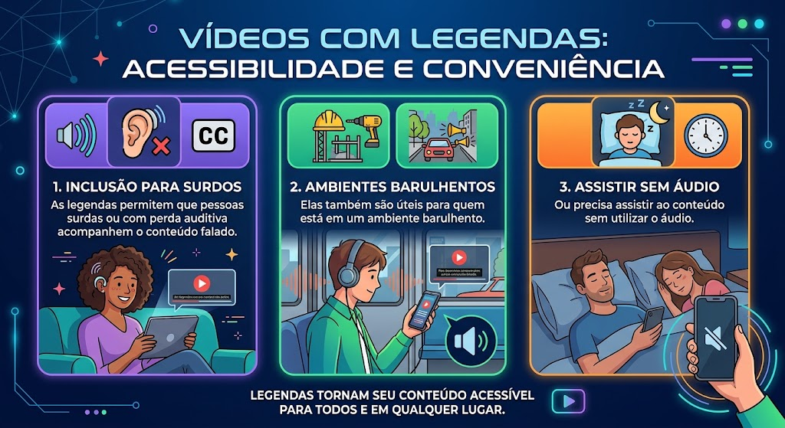

Inclusão
A tecnologia pode ajudar a ampliar o acesso à informação, educação, comunicação e serviços.
TECNOLOGIA • INCLUSÃO • ACESSIBILIDADE
A acessibilidade digital ajuda a garantir que diferentes pessoas possam utilizar sites, aplicativos, computadores e outros recursos tecnológicos.
01 — SOBRE
A acessibilidade digital significa criar tecnologias, sites e aplicativos que possam ser utilizados pelo maior número possível de pessoas, incluindo pessoas com diferentes necessidades.
A tecnologia pode ajudar a ampliar o acesso à informação, educação, comunicação e serviços.
Recursos acessíveis permitem que mais pessoas realizem atividades digitais com independência.
Uma internet acessível permite que diferentes pessoas participem da vida digital.
02 — BARREIRAS
Alguns sites e aplicativos ainda apresentam obstáculos que podem dificultar o acesso e a utilização da tecnologia.
Textos com pouco contraste podem dificultar a leitura.
Pessoas que utilizam leitores de tela podem ter dificuldade para compreender imagens sem texto alternativo.
Menus confusos e páginas sem uma ordem lógica podem dificultar a navegação.
03 — SOLUÇÕES
Pequenas decisões no desenvolvimento podem fazer uma grande diferença para a acessibilidade.
Todos os botões, links e campos importantes devem poder ser acessados pelo teclado.
Imagens importantes devem possuir descrições que expliquem seu conteúdo.
Cores com bom contraste ajudam na leitura e na identificação das informações.
Vídeos podem utilizar legendas para facilitar o acesso ao conteúdo falado.
04 — GALERIA
Veja alguns exemplos de recursos que ajudam a tornar experiências digitais mais acessíveis.
Uma página acessível não deve depender apenas do mouse.
Pessoas que utilizam o teclado precisam conseguir acessar menus, botões, links e formulários.
Por isso, os elementos interativos devem seguir uma ordem lógica e apresentar um indicador visual de foco.


Cores com contraste adequado ajudam diferentes pessoas a perceber textos, botões e informações importantes.
Uma boa escolha de cores também facilita a leitura em diferentes telas e condições de iluminação.
As legendas permitem que pessoas surdas ou com perda auditiva acompanhem o conteúdo falado de um vídeo.
Elas também são úteis para quem está em um ambiente barulhento ou precisa assistir ao conteúdo sem utilizar o áudio.

05 — ÁUDIO
O áudio apresenta uma breve reflexão sobre a importância de criar tecnologias que possam ser utilizadas por todas as pessoas.
Clique no botão abaixo para ouvir o áudio.
A tecnologia está presente em diferentes momentos da nossa vida.
Utilizamos celulares, computadores, aplicativos e sites para estudar, trabalhar, conversar e acessar serviços.
Porém, nem todas as pessoas utilizam a tecnologia da mesma maneira.
Por isso, desenvolver recursos acessíveis é fundamental para garantir que mais pessoas possam participar do mundo digital.
Recursos como legendas, contraste adequado, navegação por teclado, descrições de imagens e textos claros podem ajudar a diminuir barreiras.
A acessibilidade deve ser pensada desde o começo de um projeto.
Criar tecnologia acessível significa criar oportunidades para que mais pessoas possam participar do mundo digital.
Tecnologia para todos significa tecnologia que inclui.
06 — VÍDEO
O vídeo apresenta a importância de pensar na acessibilidade desde o desenvolvimento de uma tecnologia.
Vídeo sobre a importância da acessibilidade digital e da inclusão na tecnologia.
A tecnologia faz parte da vida de milhões de pessoas.
Utilizamos celulares, computadores, aplicativos e sites para estudar, trabalhar, conversar e acessar serviços.
Porém, nem todas as pessoas utilizam a tecnologia da mesma maneira.
Por isso, desenvolver recursos acessíveis é fundamental para garantir que mais pessoas possam participar do mundo digital.
Recursos como legendas, contraste adequado, navegação por teclado, textos claros e descrições de imagens podem fazer uma grande diferença.
A acessibilidade deve ser pensada desde o começo de um projeto.
Quando a tecnologia é planejada para diferentes pessoas, todos podem ter uma experiência melhor.
Tecnologia para todos significa tecnologia que inclui.